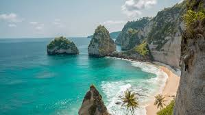

Best Cities For Vacation
Over View:
Bali:
Bali is a tropical haven known for its lush jungles, scenic rice terraces, vibrant culture, and surf-friendly beaches. It's a great spot for relaxation and spirituality, with yoga retreats, temples like Uluwatu and Tanah Lot, and plenty of serene beach resorts. Ubud offers cultural charm access to stunning nature, while Seminyak and Canggu are hotspots for nightlife and beach clubs. Adventurous travelers can hike Mount Batur at sunrise or explore waterfalls like Tegenungan. The local cuisine is flavorful and affordable—don’t miss nasi goreng or babi guling. Bali is ideal from April to October when the weather is dry and sunny.
Paris:

Paris blends timeless elegance with rich history, making it one of the most romantic and cultured cities in the world. The Eiffel Tower, Notre-Dame, and the Louvre are must-sees, while charming neighborhoods like Le Marais and Montmartre offer cafés, boutiques, and art. It’s a food lover’s dream—think croissants, escargots, macarons, and wine at every turn. You can stroll along the Seine, picnic under the Eiffel Tower, or take a day trip to Versailles. Paris is great in spring and early fall when the weather is mild and the crowds are fewer. Whether you're into art, fashion, or pastries, Paris has something for you.
Maui:
.jpg)
Maui is a stunning Hawaiian island that offers a balance of adventure and relaxation, ideal for nature lovers and beachgoers alike. The Road to Hana is a breathtaking drive through rainforests and waterfalls, while sunrise at Haleakalā feels like a spiritual experience. You can snorkel at Molokini Crater or relax on golden beaches in Wailea and Kaanapali. Maui is also known for its vibrant marine life, whale watching (in season), and local culture. The island’s food scene includes everything from fresh poke to Hawaiian BBQ. The best times to visit are spring and fall when it's less crowded but still warm.